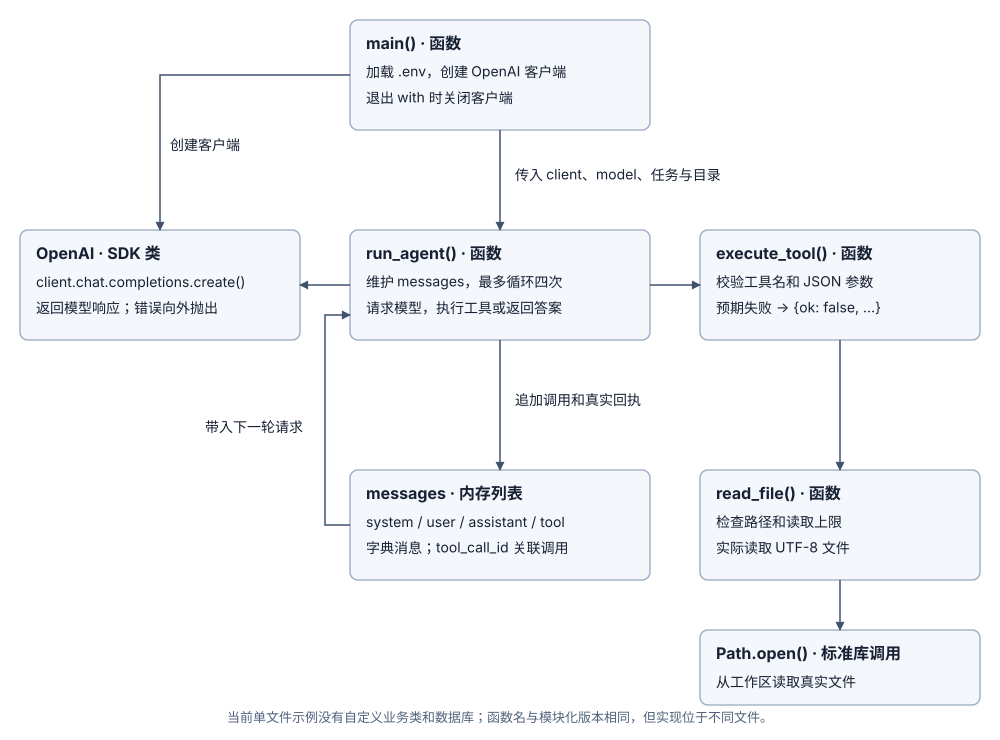

Stage 0: Run a Minimal Standalone Agent Loop
Open examples/00_plain_loop.py and start reading from run_agent().
1. Starting Point: How Does a Minimal Agent Loop Work?
A language model cannot read local files on its own; it can only judge task progress from the messages passed in each request. A complete minimal tool loop proceeds as follows:
- User: Submits a task that requires reading a local file.
- Program → Model: Sends
messagescontaining the system prompt, the user question, and available tool declarations. - Model → Program: Returns a tool call request (for example, calling
read_fileto readnotes.txt). - (System action: The program executes
read_filelocally, wraps the actual file text or error message as atoolmessage, and appends it back tomessages.) - Program → Model: Sends the next request with
messagesincluding the appended tool result. - Model → Program: Requests no further tool calls and returns the final answer directly, ending the loop.

2. Core Implementation: Reading the run_agent() Main Loop
In run_agent() inside 00_plain_loop.py, the core control logic consists of three key mechanisms:
- Tool call branch: If the model response contains
tool_calls, execute the corresponding function locally, append the result tomessages, and continue to the next iteration. - Final answer branch: If the model requests no tool calls and returns non-empty text, return that text as the final answer.
- Step limit & call correlation: Prevent infinite loops via
max_steps, and pair eachassistant.tool_calls[].idwithtool.tool_call_idso the model knows which result corresponds to which call on the next turn.
2.1 Relationship Between Current Functions and SDK Classes
In this stage, all logic lives in a single file, 00_plain_loop.py: main(), run_agent(), execute_tool(), and read_file() are plain functions that directly use the OpenAI SDK client and a list of dictionary messages.

2.2 Execution Flow from Startup to Return
- Initialization:
main()loads configuration from environment variables, creates the OpenAI SDK client, and passes the task description, model name, and workspace directory torun_agent(). - Model request:
run_agent()initializes themessageslist withsystemandusermessages, then callsclient.chat.completions.create(). - Response validation & branching: Checks the finish reason, refusal status, and tool call types, then appends the validated
assistantmessage tomessages; if there are no tool calls and the text is non-empty, it returns the final answer immediately. - Local tool execution: If tool calls are present,
execute_tool()validates the tool name, JSON arguments, and file path before callingread_file(). Expected read failures (such as a missing file) are converted into error results, while programming bugs are raised directly. - Result write-back & continuation: Serializes the result as a
toolmessage withtool_call_idand appends it tomessagesfor the next request; ifmax_stepsis reached without a final answer, raises an error and stops, closing the SDK client on exit.
2.3 Where Data Lives
TOOLS is an in-memory list of tool schemas, and messages is the message list for the current run—both are released automatically when the process exits.
3. Installation, Configuration & Running
Requires Python 3.12+ and uv. Configure a valid API key, HTTPS endpoint, and model name following .env.example (environment variables take precedence over .env), then run from the project root:
uv sync --locked
uv run python examples/00_plain_loop.py
This command calls a real model and consumes tokens (up to 4 requests by default, with SDK automatic retries disabled).
4. Tool Implementation & Error Separation: execute_tool() and read_file()
Read 00_plain_loop.py in the order execute_tool() → read_file(), paying attention to two boundary layers:
- Entry argument validation (
execute_tool()): Tool arguments generated by a model are untrusted external inputs, so the tool name and JSON format must be validated at the entry point. - Resource boundary enforcement (
read_file()): Focuses on checking workspace path traversal, symlinks, file size limits, and UTF-8 encoding, making it easy to test independently and reuse later. - Expected failures vs. exceptions: Expected failures such as missing files or out-of-workspace paths are turned into structured results and returned to the model so it can adjust its arguments; model connection errors, truncated responses, or code bugs immediately abort the loop and are never disguised as success or empty content.
5. Local Experiments & Automated Checks
You can verify the loop behavior through four experiment scenarios:
- Normal read: Read
notes.txtand observe the tool call, real text result, and next-turn model input. - Missing file feedback: Request a non-existent file and verify that the error result is passed back to the model.
- Security boundary blocking: Test out-of-workspace paths, non-UTF-8 files, or oversized files to verify that the tool refuses to read them.
- Step limit protection: Have a local test server continuously request tools and verify that the loop stops with a clear error upon reaching
max_steps.
uv run pytest
uv run ruff check learn_agent examples scripts tests
uv run mypy
uv run python scripts/check_docs.py
Local tests use a local HTTP server and real temporary files to verify SDK protocol handling and control flow; real model tool-selection behavior can be observed by running the example in Section 3.
6. Expected Outcomes
- Clear call chain: You can pinpoint the exact lines of code that send the model request, execute the local file read, and append the tool result back to
messages. - Accurate result correlation: Every tool execution result is paired with the model-initiated call via
tool_call_id. - Explicit stopping and error boundaries: You can distinguish among returning a normal final answer, feeding expected tool failures back to the model, and stopping with an error when
max_stepsis reached.
Next, proceed to Stage 1: split the single file by responsibility into dedicated model, tool, and loop modules.